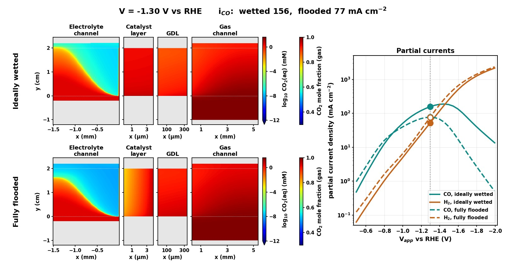
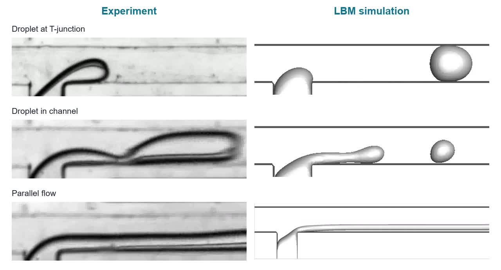
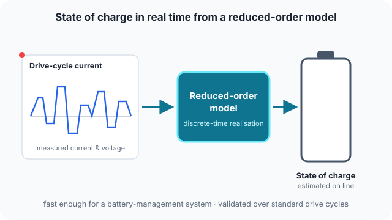

Research
Physics-based models of electrochemical energy-conversion devices — coupled, nonlinear transport of charge, species, water, heat and momentum — validated against experiments to find what limits performance and lifetime.
Current projects (2) · Completed projects (5)
Current projects

Flooding and salt in zero-gap CO2 electrolysers
Zero-gap membrane electrode assemblies reach industrial current densities, but their cathodes flood and fill with (bi)carbonate salt within hundreds of hours.
in progress
Bicarbonate-fed bipolar-membrane electrolysers
Bicarbonate electrolysers convert captured carbon directly, without regenerating and compressing CO2 gas: protons from a bipolar membrane release…
manuscript in preparationCompleted projects

Bipolar membrane modelling
Bipolar membranes split water at the junction between a cation- and an anion-exchange layer, driven by strong local electric fields.
manuscript under review
Mass-transport limits in a microfluidic GDE electrolyser
Gas diffusion electrodes deliver CO2 to the catalyst in the gas phase, but performance is still set by how fast reactants and products move through…
Communications Chemistry · 2024
Field-enhanced dissociation of buffer species
Strong interfacial electric fields can accelerate the dissociation of protonated buffer species, changing the local pH near electrodes and membranes.
ACS Electrochemistry · 2025
Droplet formation in microfluidic T-junctions
How droplets form and how the flow regime changes in a T-shaped microfluidic device.
Physical Review Fluids · 2020
Real-time state of charge of Li-ion cells
Battery management systems need fast, accurate state-of-charge estimates.
Research assistant, IIT Delhi · 2020